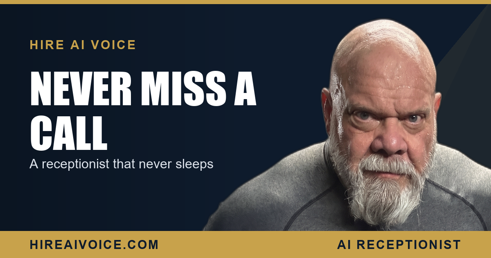

The 24/7 AI Receptionist: Never Miss Another Call

The Short Version
- An AI receptionist is an AI voice agent that answers every call around the clock, greets the caller, handles FAQs, qualifies the lead, and books the appointment.
- It is not voicemail. Voicemail records and hopes you call back. The AI has a real conversation and closes the job before the caller hangs up.
- It beats a part-time human too: always on, never sick, handles many calls at once, flat monthly cost instead of an hourly wage.
- Always-on coverage is the unlock. The calls you miss most are the ones that come at night, on weekends, and while you are already on a job.
- We can have one live for your business in about 72 hours, starting at $297 a month with no contracts.
What Is a 24/7 AI Receptionist?
A 24/7 AI receptionist is an AI voice agent that answers every inbound call at any hour, greets the caller by your business name, and carries a real conversation. It is not a phone tree of "press 1 for sales." It listens, understands, and responds like a trained front-desk person who never clocks out. For a service business in Santa Clarita or Los Angeles County, it is the difference between a ringing phone and a booked job.
The job of a receptionist was always simple: answer fast, be helpful, and get the appointment on the calendar. The problem was never the job. It was that you cannot afford to pay a human to sit by the phone 24 hours a day, and you cannot answer it yourself while you are under a sink or up on a roof. An AI receptionist removes that ceiling entirely.
What Does an AI Receptionist Do on a Call?
It greets, answers, qualifies, and books, all in one conversation. Here is what actually happens when a customer calls and the AI picks up.
It greets the caller. "Thanks for calling [your business], how can I help?" Warm, by name, instant. The caller knows they reached the right place and a real conversation has started.
It answers the FAQs. Hours, service area, what you do and do not handle, rough pricing, whether you offer emergency service. The questions that used to eat your day and the calls you never had time to return are handled in seconds.
It qualifies the lead. It asks what the job is, where they are, and how soon they need it. A burst pipe today and a quote for a remodel next month are not the same call, and the AI sorts them so the urgent ones get treated as urgent.
It books the appointment. This is the part that pays. The AI offers open slots and drops the appointment straight into your calendar before the caller hangs up. If something genuinely needs you, it captures the details and fires off automated follow-up so the lead never goes cold.
How Is It Different From Voicemail?
Voicemail is a dead end. An AI receptionist is a conversation. When a call rolls to voicemail, you are asking a stranger with a problem to record a message and wait, on faith, for you to call back before they hire someone else. Most of them will not. They hang up and dial the next name on the list.
An AI receptionist closes that gap. Instead of a beep and silence, the caller gets answers to their questions and an appointment on the books. The lead that voicemail would have lost becomes a job. That is the whole difference, and over a busy month it is enormous.
Is It Better Than a Part-Time Human?
For most service businesses, yes. A part-time receptionist is a real cost and a partial fix. They cover a few hours a day, take lunch, call in sick, and go home at five. The calls that matter most, the nights and weekends and the middle of a busy Tuesday, are exactly the ones they are not there for.
The best receptionist is the one who never goes home.
An AI receptionist answers every call, 24 hours a day, never has an off day, and handles several calls at once without putting anyone on hold. It does it for a flat monthly rate instead of an hourly wage plus the cost of the calls that still get missed. This is not about replacing good people. It is about covering the hours no human can, at a price that finally makes sense.
Why Always-On Coverage Is the Real Unlock
Because the calls you miss most are the ones that come when you are least available. Emergencies do not check your hours. A burst pipe at 9 PM, a dead AC unit on a Sunday afternoon, a homeowner researching contractors at midnight. Those are not edge cases. For a service business, they are some of the highest-intent calls you will ever get, and they land precisely when voicemail or a closed office throws them away.
Always-on coverage flips that. The 9 PM pipe gets a warm answer and a booked appointment while your competitor's phone rings into the void. The Sunday AC call is on your calendar by Monday morning. The late-night researcher gets their questions answered and never bounces to the next site. This is exactly the gap an AI receptionist closes that a traditional answering service cannot, and it is why missed calls stop being a leak. For the rare call that slips through, missed-call text-back turns it into a booked job instead of a dead end.
What to Do This Week
You do not need a bigger ad budget. You need to stop sending the calls you already get to voicemail. Three moves.
1. Count the misses. For one week, track how many calls you answer live versus how many roll to voicemail or come in after hours. The number is your hidden revenue leak.
2. Put a 24/7 AI receptionist on the line. One that greets, answers, qualifies, and books turns your worst coverage hours into your best, without hiring anyone.
3. Let it follow up automatically, so no lead ever goes cold between the first call and the booked job.
The businesses winning in Santa Clarita and LA County are not the ones with the slickest ads. They are the ones who answer, every time, day or night. An AI receptionist is how you do that without ever missing another call.
Never Miss Another Call
Our AI receptionist answers every call 24/7, books the job, and follows up automatically. Live in 72 hours. $297/month, no contracts. Or call Sarah, our live agent, and hear it yourself.